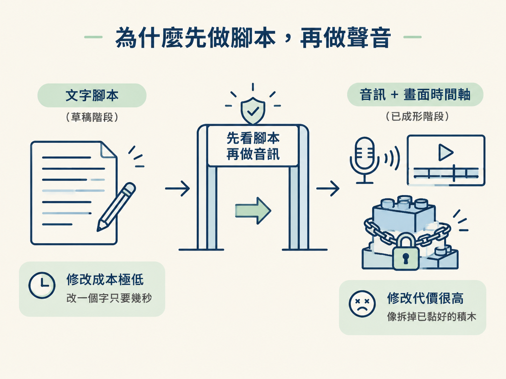
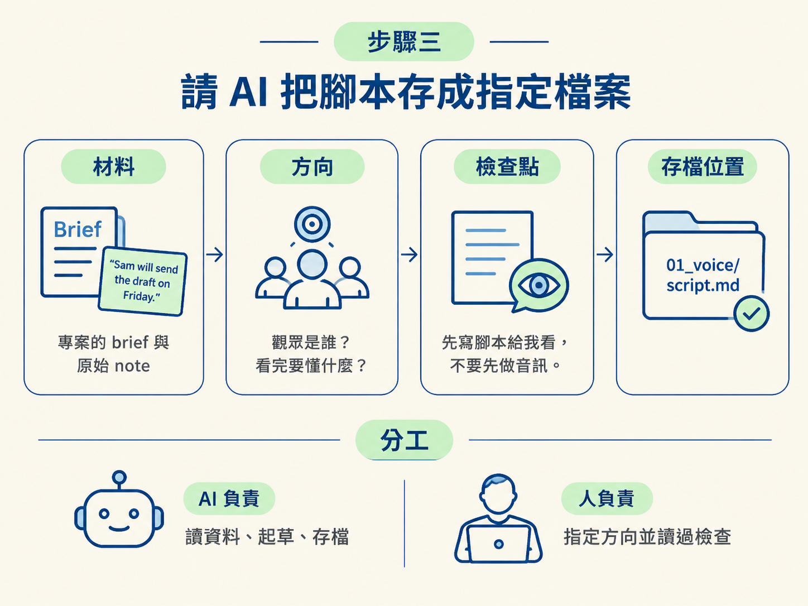

這是整條製作流程的第一步：先把 brief 和原始 note 交給 AI，產出一份可以照著念的旁白腳本。做完後，你會得到 01_voice/script.md，並在進入音訊製作前，先檢查文字內容。
動手前，你需要準備好兩樣東西：
這一步由 AI 負責起草與存檔；你負責說清楚方向，並在腳本完成後讀過、檢查內容。
現在手上的資料還只是 brief 和一張便利貼。你要把它們變成一段觀眾聽得懂、也能直接念出來的旁白。
如果一開始只對 AI 說「幫我做一段旁白」，它可能會寫出文法正確、聽起來順的內容，卻沒有講中你真正想教的重點。等聲音做完才發現方向不對，就得重新改文字、重新配音，連後面的畫面時間也可能要跟著調整。
所以這一步先設一個檢查點：先拿到文字、看過文字，確認內容沒問題後，下一步才做音訊。現在改一個字很便宜；等聲音和時間軸都綁上去，修改就像拆掉已經黏好的積木。

專案裡已經有 brief 和原始 note，AI 不需要憑空編故事。但材料準備好了，方向仍然要由你指定。指令至少要交代兩件事：
這支短教學動畫的範例，會圍繞著 Sam、草稿和週五這三個元素。觀眾最後要能理解：
你現在不用自己寫分鏡，也不用先安排畫面。這一課只處理一件事：把觀眾要聽懂的內容，先用文字講清楚。
在指令裡直接寫出：「先寫腳本給我看，不要先做音訊。」這句話就是流程中的檢查點。
原因很簡單：聲音一旦完成，每一句話的長度都會影響後面的畫面時間。此時如果想改一句話，就不只是改文字，還可能要重新處理錄音和時間軸。
因此，若腳本還沒確認，就不要讓 AI 進入音訊製作。先讓 AI 交出文字，你讀過並確認內容後，再進下一課。
除了請 AI 起草內容，也要指定檔案位置。這份腳本要存成 01_voice/script.md，之後選定的旁白錄音也會放在同一個資料夾裡。
這樣安排是為了讓下一課容易交接：下一課會拿旁白錄音去推算時間碼。如果腳本和音訊都放在同一個地方，就不必再到處尋找素材。
把材料、方向、檢查點和存檔位置放在同一個指令裡，內容可以這樣寫：
請先讀這個專案的 brief 和原始 note。
觀眾是 <誰>，他們看完要懂 <什麼>。
先寫一份約 30 秒的口語解說腳本給我看，不要先做音訊。
腳本請存到 01_voice/script.md。這裡的 <誰> 和 <什麼>，換成你對觀眾與學習目標的答案即可。

指令送出後，AI 應該會回傳一份草稿，並建立 01_voice/script.md。請打開這個檔案，確認裡面是一段可以自然念出來的口語解說。
你可以依序檢查以下內容：
如果內容不準確或念起來不順，現在就請 AI 修改 01_voice/script.md，再重新讀一次。先不要急著配音，直到文字符合你的預期為止。
完成這一步時，工作區裡應該有一個 01_voice/script.md 檔案。打開它，你會看到一段約 30 秒、可以直接念出的口語腳本，內容圍繞著 Sam、草稿和週五。
這就是本步驟的可驗證結果：文字腳本已經存檔，而且你已經讀過它。此時先停在這裡，不要急著做旁白音訊；下一課才會處理腳本的逐句校對與配音版本。
請 AI 寫腳本時，把指令分成三塊：材料是 brief 與 note，方向是觀眾是誰、要懂什麼，檢查點則是先看腳本、再做音訊。腳本會存成 01_voice/script.md。先有文字、後有聲音，能讓你在最容易修改的階段確認內容。
下一課要處理這份草稿：逐句對照來源，刪掉 AI 自己加進去的內容，並把念起來卡住的地方改順，最後才存成可以拿去配音的版本。